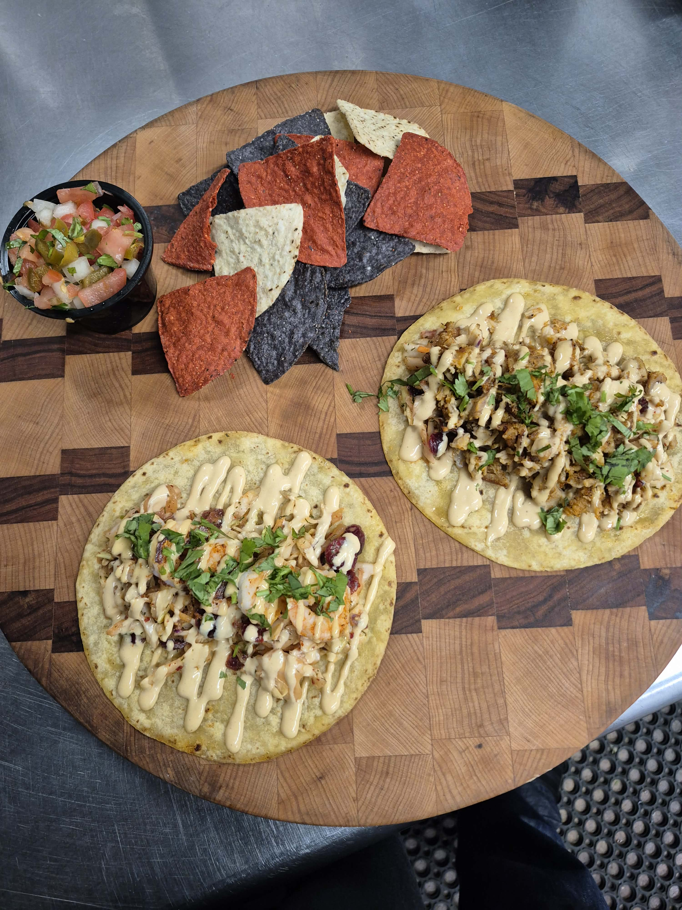

A premium coastal food experience built from a single post — turning appetite, story, and local identity into something people can actually act on.
This page shows what happens when a strong food post stops being static content and becomes a digital experience. Same product. Higher perceived value. Clearer customer path.
Rooted in place, flavor, and waterfront identity.
Presentation that reinforces freshness instead of leaving it implied.
Built to spotlight the dish people already want and make it more memorable.

Real food. Real product. Real leverage. This kind of page gives the dish more presence, more context, and a cleaner path from attention to decision.
This is the ScanCraft shift: taking content that already exists and giving it structure, presentation, and momentum.